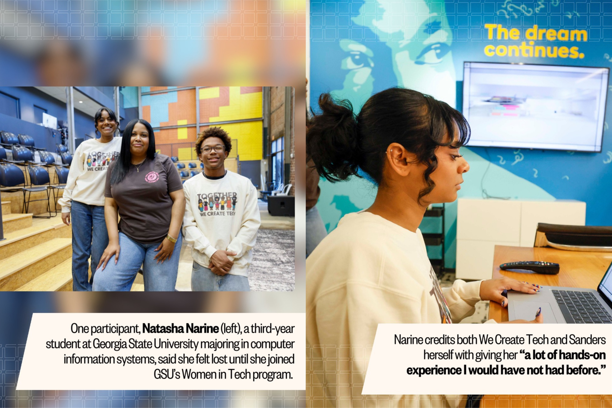
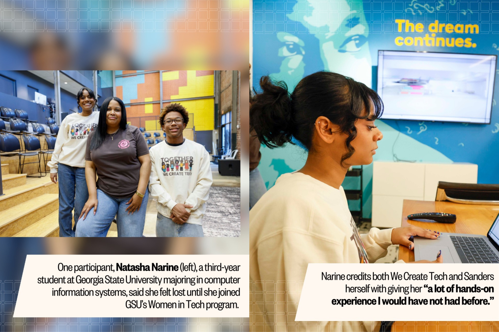

We Create Tech Merch Design
A dynamic merch design created for WCT, crafted to visually represent and amplify the organization’s mission through modern layout, brand colors, and bold typography. The final design was featured in the Atlanta Journal-Constitution.
.png) 

Overview
Timeline: 1 Week
Role: Graphic Design, Layout Design, Branding
This project explored how to represent an organizations mission through apparel-style artwork. I focused on creating a design that felt bold, clean, and visually cohesive across potential merch items like shirts, posters, and digital assets.
Process
I started by meeting with the WCT team to understand the organization's mission and values. This helped me align the design with their goals and ensure it resonated with their target audience. We wanted to create a design that celebrated diversity and inclusivity in technology, so I focused on bold typography and dynamic character designs to convey inclusivity and innovation. Through brainstorming sessions and feedback loops, I was able to refine the concept and create a design that truly represented their vision.

Reflection
This project strengthened my skills in creating event-based visual identities while staying intentional with hierarchy and composition. I also learned how small typographic tweaks can completely shift the personality of a merch design. Overall, it was a fun opportunity to blend branding, creativity, and apparel-focused thinking into one cohesive piece.
It was an honor to be trusted with this design and I'm grateful for my mentor Shana Shanders for giving me this oppurtunity!